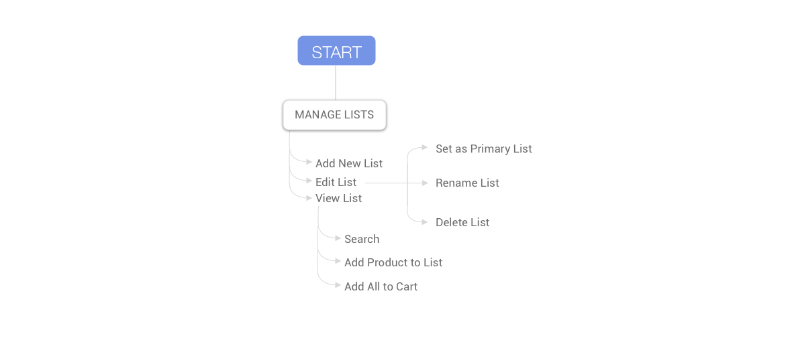

Kroger Shopping List
TIMELINE
Summer 2019 Internship (2 week design sprint)
ROLE
Product Designer
User Research, Wireframing, Prototyping, User Testing
OVERVIEW
Kroger Shopping List was based off of the existing list feature on the mobile apps for the Kroger Co. family of stores, so that the in-store shopping experience using the app was emphasized and encouraged.
PROBLEM STATEMENT
The List feature of the Kroger app can be hard to find and use and therefore is not often used by customers before going to the store or while in the store.
DISCOVER
Background
The existing experience for the List had the shopping list features buried, and we worked on pulling it out and making the flow of the feature more along the lines of a typical site map.
Before we started ideating, we looked at the existing interface that was on the app before engaging with the Google Sprint process. Our main goal was increasing household usage of the app and increasing e-Commerce activity through the conversion of items from Shopping List to Cart.
Existing Interface
User Research
Through our research, we discovered that the users of the Kroger app have to navigate through many categories when trying to filter the available coupons. This also meant that users were unable to clearly see what they were filtering by or quickly find categories to filter by. We also saw that there was a lot of types of filtering options provided that customers may not necessarily want to see. The oversaturation of information also meant that the users were unable to be efficient in their use of the coupon feature, which added to complaints that we saw. Because of the high usage of the coupon feature and the level of feedback we saw, we kept this in consideration.
IDEATION
Phone App Sketches
As we did the sketches for part of our 2 week sprint to iterate on the Shopping List feature, we had to keep in mind what our constraints were in regards to not only what was possible for the developer teams to accomplish while also trying to think critically about how we could increase the use of the List as well as the conversion of items from List to Cart.
Phone App Wireframes
DESIGN
Phone App User Flow
This flowchart for the Shopping List feature iteration shows what features were implemented or exist on the section of the app for users to access.
Phone App UI Screens
When the feature was sent to be developed to go live, only a part of what we had designed went live, for the sake of prioritizing and keeping up with the other features that were being worked on. Since then, the Shopping List has evolved beyond this to minimize taps and increase efficiency.
TAKEAWAYS
Reflections
While I think our team was able to increase the efficiency while using the shopping list feature of the Kroger app, I think that there were some critical things that we learned about our users and about their use (and lack thereof) of the list feature. Our attempts to revamp the list feature was to hopefully encourage Kroger shoppers to increase their usage of the list to create a more efficient shopping experience for them, but I think we also realized that we had to be realistic about the fact that many users are not likely to change the ways in which they plan and execute their shopping trips.